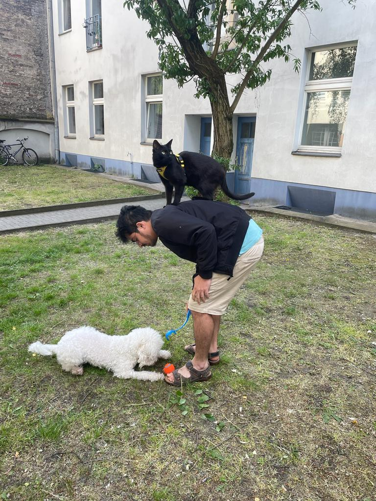
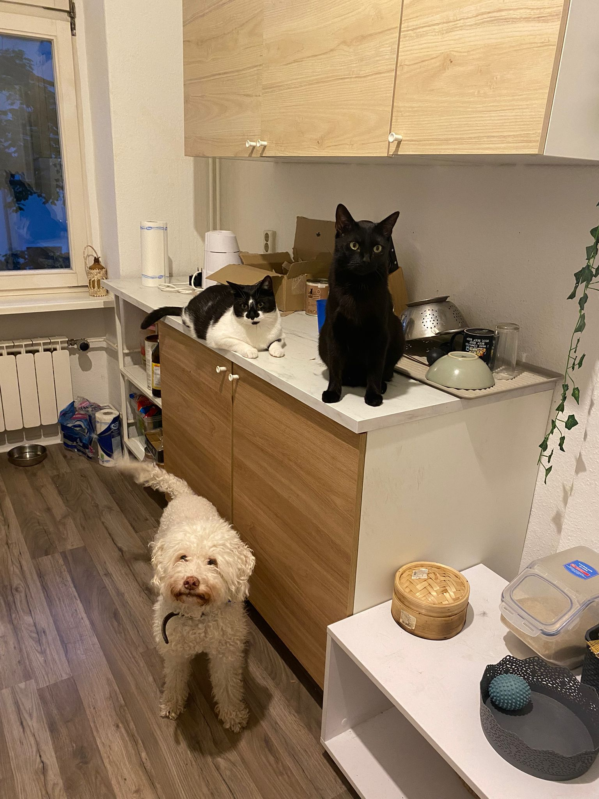
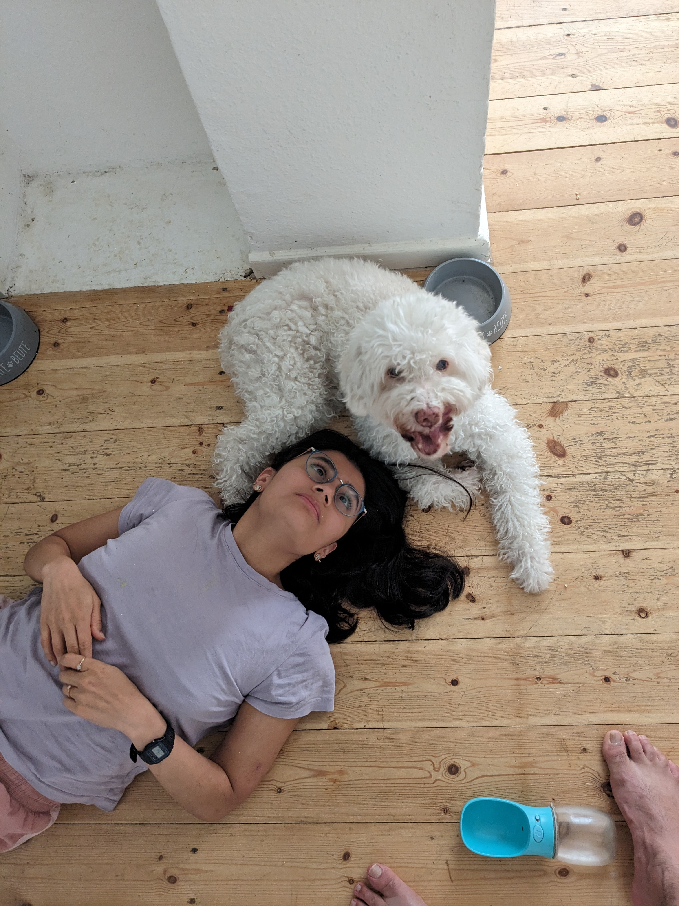

AdeleIf I made a list of my top ten memories from Berlin, I would struggle to find one where there wasn't a dog-shaped cloud refusing to give me back her orange ball, or waiting for some kalb to drop from my döner with patience. I think an apt one-word description of Adelito is "paradox" (already evidenced by that nickname). She was a hilarious mixture of child-like excitement and energy, combined with a sage wisdom of knowing exactly what was worth spending her energy on. On one hand, she was smart enough to immediately know whose authority she needed to accept, and on the other hand she would gleefully lap up another dog's poop as a delectable treat. She could annoy you by following you around all day, but if you opened a fridge and there was no one behind you begging for a carrot, it felt like something was missing. Adele and the cats made for an entertaining posse - the cats being in equal parts: curious about, afraid of, and wanting to bully her, and Adele trying her best to ignore their existence. Possibly the most content I have felt is when all the three weirdos would carve out snuggle spots on the bed with Nandu and me. Unfortunately, contentment did not always mean comfort, and these fleeting moments would last only until my next sneeze, which would send the three of them scrambling and fleeing for their life. To add insult to injury, this would lead to Nandu half-sleepily shaking her head in disappointment as she was left with just her least favorite bed-cohabiter of the day. A massive advantage of having Adele over was that she was one of the few reasons I was willing to get out of the house for some mild physical activity. It was always fun pretending to be the owner of a dog who walked around with utter disdain for other dogs. In fact, Nandu and I hatched several plots to secure primary ownership of her - talking shit about her parents, promising a life full of treats without having to perform tricks, and so on. Ultimately, however, this idea was rejected by Adele, which I presume could only be due to our inability to match her hairstyle and/or swimming ability. In full earnestness, we could all stand to learn a few things from Adele: her razor sharp focus, her ability to be completely unperturbed by rejection, and her authenticity. I feel privileged that we got to know her and be a small part of her life. I feel confident in saying she lived a full and happy life, thanks in large part to the tireless and selfless love from her parents. In her honour, I vow to always eat carrots with a speed and vigour that ensures I cannot taste a single bite. RIP Adelito <3.    |